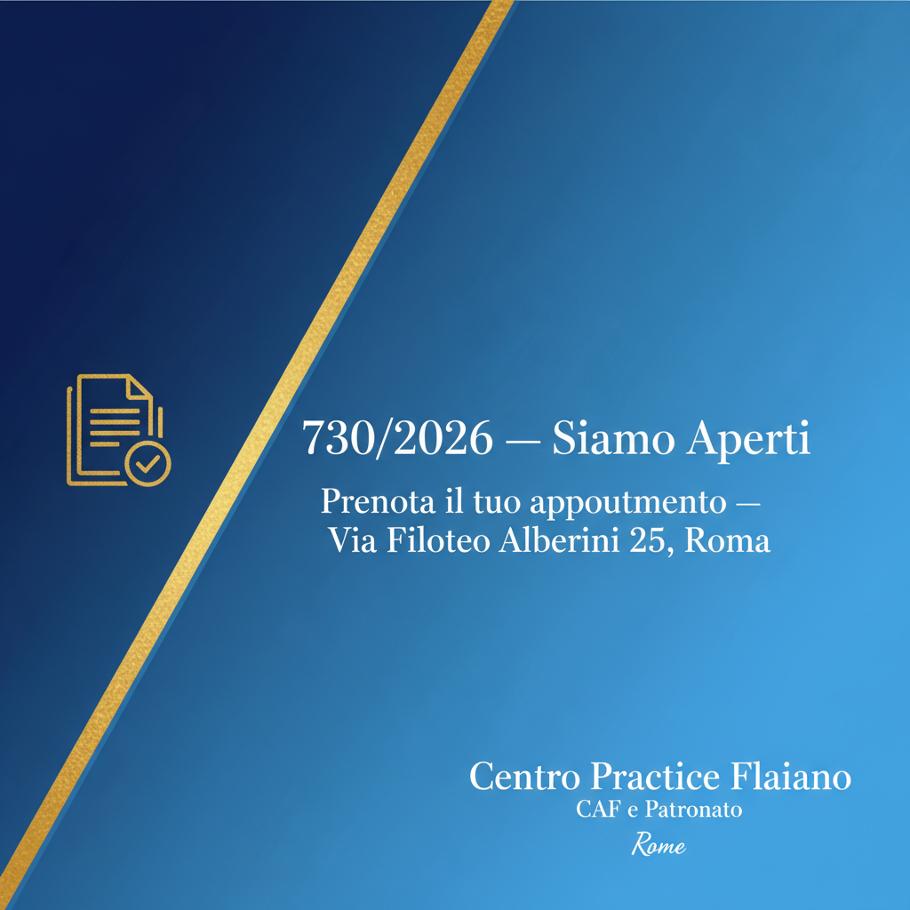

Bonus 2026: Tutti gli Aiuti a Famiglie e Individui — Guida Completa

1. Bonus per la Famiglia con Figli
1.1 Assegno Unico Universale (AUU)
L'Assegno Unico Universale è la misura di sostegno familiare più importante del panorama italiano. Sostituisce gli vecchi Assegni Nucleo Familiare (ANF) e si rivolge a tutti i nuclei con figli a carico di età compresa tra 0 e 21 anni (quindi anche studenti universitari fino ai 21 anni compiuti). È una misura universale, nel senso che spetta a tutte le famiglie italiane e straniere residenti, a prescindere dalla cittadinanza, purché si rispettino i requisiti.
Importo massimo dell'assegno è di circa 250 euro mensili per ogni figlio a carico. Questo importo si ottiene con un ISEE inferiore o uguale a 17.090 euro. Superata questa soglia, l'importo diminuisce progressivamente in base a una tabella di ricalcolo che dimezza gradualmente il beneficio:
| Fascia ISEE | Importo mensile per figlio |
|---|---|
| ISEE ≤ 17.090€ | ~250€/mese (importo massimo) |
| ISEE 17.091€ - 25.000€ | Importo ridotto progressivamente |
| ISEE 25.001€ - 45.575€ | Importo ulteriormente ridotto |
| ISEE > 45.575€ o senza ISEE | ~57€/mese (importo minimo) |
La maggiorazione dell'assegno è prevista per i nuclei con 3 o più figli (maggiorazione di 100 euro mensili forfettari) e per le madri nubili o vedove sotto i 21 anni (maggiorazione di 20 euro mensili per il primo figlio).
L'assegno viene erogato direttamente dall'INPS sul conto corrente indicato nella domanda. Il pagamento avviene mensilmente nel corso di ogni mese (in genere il giorno 15-20 del mese). Il CAF può presentare la domanda per tuo conto, verificando che tutti i requisiti siano rispettati e che i dati anagrafici siano corretti.
1.2 Bonus Asilo Nido
Il Bonus Asilo Nido è un contributo per le rette di asili nido pubblici e privati, nonché per i servizi di assistenza domiciliare per bambini con disabilità. A differenza dell'Assegno Unico, non sostituisce una misura precedente: è un benefit specifico introdotto per sostenere la genitorialità e favorire la conciliazione lavoro-famiglia.
Gli importi per il 2026 sono:
- ISEE ≤ 25.000€: fino a 3.600 euro annui (300 euro mensili per 12 mesi)
- ISEE tra 25.001€ e 40.000€: fino a 2.500 euro annui
- ISEE tra 40.001€ e 45.000€: fino a 1.500 euro annui
Il bonus copre le rette di asili nido, microscuole e servizi educativi per la prima infanzia. Il rimborso avviene tramite bonifico dall'INPS direttamente sul conto corrente del richiedente, dopo che la struttura ha registrato il pagamento della retta. La domanda si presenta online sul portale INPS o tramite CAF.
1.3 Bonus Nuovi Nati 2026
Tra le novità 2026, la Legge di Bilancio ha introdotto un nuovo Bonus Nuovi Nati: un contributo di 1.000 euro una tantum per ogni figlio nato o adottato nel corso del 2026. Questo bonus è privo di soglie ISEE, nel senso che spetta a tutte le famiglie indipendentemente dal reddito, semplicemente presentando la domanda e verificando la nascita o l'adozione.
Il bonus viene erogato automaticamente dall'INPS dopo la registrazione anagrafica della nascita o l'avvenuta adozione. Non richiede una domanda specifica in molti casi, ma è comunque consigliabile verificare con il CAF che tutto sia in regola.
1.4 Carta Acquisti
La Carta Acquisti (chiamata anche Carta Risparmio Spesa o Social Card) è una carta di pagamento预加载ata con 80 euro ogni bimestre (480 euro annui) utilizzabile per acquisti di generi alimentari, farmaci e beni di prima necessità. È destinata a due categorie specifiche:
- Anziani over 65 con ISEE ≤ 8.117€
- Famiglie con bambini under 3 (fino a 36 mesi di età) con ISEE ≤ 8.117€
La carta viene consegnata direttamente dall'Ente Poste Italiane al domicilio del beneficiario. Non è una carta di credito standard: è una carta prepagata con un saldo che viene caricato automaticamente ogni bimestre. Si può utilizzare in tutti i negozi che accettano PagoBANCOMAT e nei supermercati convenzionati.
1.5 Assegno di Inclusione (ADI)
L'Assegno di Inclusione (ADI) è la misura di contrasto alla povertà che sostituisce il Reddito di Cittadinanza (RDC) per i nuclei familiari con persone anziane (oltre 60 anni) o con disabilità. A differenza del RDC, l'ADI non è legato alla ricerca attiva di lavoro, ma prevede un percorso di inclusione sociale.
L'ADI prevede un importo mensile fino a 630 euro per un nucleo single, con importi maggiori per nuclei più grandi. La soglia ISEE per l'accesso è di 6.000 euro. Il beneficio viene erogato tramite carta di pagamento dedicata e prevede anche l'accesso a servizi sociali e percorsi di accompagnamento.
2. Bonus per la Casa e le Ristrutturazioni
2.1 Bonus Ristrutturazione 50%
Il Bonus Ristrutturazione è una detrazione IRPEF del 50% sulle spese di ristrutturazione edilizia sostenute su immobili abitativi. La detrazione si applica su un massimale di 96.000 euro per ciascun immobile, recuperabile in 10 quote annuali di pari importo nella dichiarazione dei redditi.
Rientrano nelle spese detraibili:
- Manutenzione straordinaria (ristrutturazione vera e propria)
- Restauro e risanamento conservativo
- Recupero edilizio in genere
- Realizzazione di autorimesse o posti auto
- Eliminazione delle barriere architettoniche
- Realizzazione di scale, ascensori e montacarichi
- Impianti di sicurezza e videosorveglianza
- Bonifica dall'amianto
- Interventi di consolidamento statico
Per accedere al bonus è necessario che i pagamenti avvengano con bonifico parlante (con causale specifica e dati del beneficiario). Il CAF può verificare la correttezza dei bonifici e inserire le spese nel 730 o nel Modello Redditi.
2.2 Ecobonus 50-65%
L'Ecobonus è la detrazione IRPEF per gli interventi di efficientamento energetico degli edifici. Gli interventi possono beneficiare di aliquote differenti:
- 65%: interventi di riqualificazione energetica globale (cappotto termico, riduzione del fabbisogno energetico)
- 50%: sostituzione di finestre e infissi, installazione di pannelli solari, caldaie a condensazione di nuova generazione
- 85%: interventi antisismici (Sismabonus)
Per le caldaie a condensazione, è importante sapere che dal 2025 le caldaie a gas tradizionali non rientrano più nell'ecobonus. Le caldaie ibride (gas + renewable) hanno diritto alla detrazione al 65%. Le caldaie a biomassa (pellet) hanno diritto al 50% in certi casi.
2.3 Sismabonus 50-85%
Il Sismabonus è la detrazione per gli interventi di miglioramento sismico degli edifici. L'aliquota varia in base alla classe di rischio sismico raggiunta dopo l'intervento:
- 50%: interventi generici di miglioramento sismico
- 70%: miglioramento sismico che porta a una classe di rischio inferiore
- 85%: miglioramento sismico che porta a due classi di rischio inferiori
Il massimale per il Sismabonus è di 96.000 euro per unità immobiliare. Sono ammessi anche interventi su parti comuni di condomini con un tetto complessivo più elevato.
2.4 Bonus Mobili 50%
Il Bonus Mobili è una detrazione IRPEF del 50% sulle spese di acquisto di mobili ed elettrodomestici per l'arredo di immobili oggetto di ristrutturazione. Il massimale di spesa è di 5.000 euro. La condizione fondamentale è che l'immobile sia stato oggetto di ristrutturazione edilizia (non è sufficiente un semplice rinnovo dell'arredamento).
Rientrano nel bonus:
- Mobili per l'arredamento (letti, armadi, tavoli, sedie, divani)
- Elettrodomestici (frigoriferi, lavatrici, lavastoviglie, fornelli) di classe almeno A+ (o A per i forni)
- Materassi e reti ortopediche
- Mobili per ufficio
I pagamenti devono avvenire con carte di credito, debito o bonifico. Il CAF inserisce le spese nella dichiarazione dei redditi e verifica che l'immobile sia stato effettivamente ristrutturato.
2.5 Bonus Trasporti
Il Bonus Trasporti è un contributo per l'abbonamento ai mezzi pubblici locali (TPL). Nel 2026 è previsto un rifinanziamento che dipenderà dalla Legge di Bilancio annuale. In generale, il bonus prevede un rimborso fino a 60 euro per abbonamento annuale o mensile ai mezzi pubblici.
Il beneficio è riservato a lavoratori dipendenti e pensionati con ISEE sotto una certa soglia (da verificare annualmente). La domanda viene gestita dai comuni o dalle regioni, non dall'INPS. Informati presso il tuo CAF per conoscere le modalità e i tempi di presentazione della domanda.
3. Bonus Utenze e Risparmio Energetico
3.1 Bonus Sociale Bollette (Energia e Gas)
Il Bonus Sociale (ex Bonus Elettricità e Bonus Gas) è uno sconto applicato direttamente sulle bollette di luce e gas per i nuclei familiari in condizioni di disagio economico. È uno dei pochi bonus che non richiede una domanda specifica: è sufficiente aver richiesto l'ISEE e presentare la DSU.
I requisiti per accedere al Bonus Bollette sono:
- ISEE ≤ 9.530 euro per nuclei fino a 3 componenti
- ISEE ≤ 20.000 euro per nuclei con 4 o più figli a carico
- Disagio fisico: persone che necessitano di apparecchiature elettromedicali salvavita (in questo caso non serve l'ISEE)
Lo sconto viene applicato automaticamente dal gestore di energia elettrica e dal venditore di gas sulla bolletta successiva alla verifica dell'INPS. L'importo dello sconto varia in base ai consumi e alla composizione del nucleo familiare, ma può arrivare a centinaia di euro annui.
3.2 Conto Termico
Il Conto Termico è un incentivo per l'installazione di impianti di climatizzazione invernale a fonti rinnovabili (pompe di calore, solare termico, biomasse). È gestito dal GSE (Gestore Servizi Energetici) e prevede un contributo che varia in base all'intervento e alla potenza dell'impianto.
Il Conto Termico 2.0 prevede incentivi fino al 65% della spesa ammissibile, con tempi di erogazione che variano da 1 a 5 anni a seconda dell'intervento. È compatibile con l'Ecobonus nella misura in cui le due agevolazioni non coprano le stesse spese.
3.3 Superbonus 90% — Stato Attuale
Il Superbonus al 90% ha subito diverse modifiche negli ultimi anni. Nel 2026 è ancora presente ma con aliquote ridotte rispetto al picco della pandemia. È consigliabile verificare con il CAF o con un tecnico abilitato l'esatta applicabilità al proprio caso specifico, poiché la normativa è in continua evoluzione.
4. Bonus per la Salute e il Benessere
4.1 Bonus Psicologo
Il Bonus Psicologo è un contributo per le spese di psicoterapia. Introdotto durante la pandemia per rispondere all'aumento dei disturbi psicologici legati all'isolamento, nel 2026 è ancora attivo con le seguenti caratteristiche:
- Importo massimo: 1.500 euro per persona
- Percentuale di rimborso: 50% della spesa sostenuta
- Soglia ISEE: 50.000 euro
- Spese ammesse: sedute di psicoterapia individuale e di coppia/familiare presso psicologi e psicoterapeuti iscritti all'Albo professionale
La domanda si presenta sul portale INPS o tramite CAF. Il rimborso avviene a consuntivo, cioè dopo che hai sostenuto le spese e presentato la documentazione. Sono ammesse le fatture e le ricevute fiscali delle sedute effettuate.
4.2 Detrazioni Spese Sanitarie
Le spese sanitarie danno diritto a una detrazione IRPEF del 19% sulla parte di spesa che eccede una franchigia di 129,11 euro. Rientrano nel calcolo:
- Visite mediche specialistiche
- Esami diagnostici e analisi di laboratorio
- Farmaci (anche omeopatici se prescritti)
- Ticket ospedalieri e ambulatoriali
- Dispositivi medici (occhiali, apparecchi acustici, plantari, protesi)
- Spese per cure dentistiche
- Spese per cure termali
Per le persone con disabilità, la detrazione spetta sull'intero importo della spesa sanitaria (senza franchigia). Questo rappresenta un beneficio significativo per le famiglie che hanno persone con disabilità a carico.
4.3 Bonus Vista e Apparecchi Acustici
Per gli acquisti di occhiali da vista e apparecchi acustici esistono bonus specifici. Il Bonus Vista è un contributo per l'acquisto di occhiali da vista (lenti e montature) riservato a persone con età inferiore a 18 anni o con特定的 patologie oculistiche. Il valore del bonus varia in base alla normativa regionale.
L'apparecchio acustico può invece beneficiare del Bonus Status (ex 730) se la spesa rientra nei dispositivi medici detraibili al 19%.
5. Bonus per l'Istruzione e lo Sport
5.1 Bonus Scuola
Le spese per l'istruzione dei figli danno diritto a detrazioni fiscali. La detrazione per spese di istruzione è del 19% su un massimo di 800 euro per alunno/studente, e copre:
- Retta della mensa scolastica
- Gite scolastiche e viaggi di istruzione
- Assicurazione scolastica
- Attività extrascolastiche integrative
Per l'Università, la detrazione è del 19% sulla tassa di iscrizione e sui contributi universitari. L'importo massimo detraibile varia in base all'ateneo e alla zona geografica. Gli studenti con ISEE basso possono inoltre accedere a esoneri totali o parziali delle tasse universitarie.
5.2 Bonus Sport
Le spese per l'attività sportiva dei ragazzi tra i 6 e i 18 anni danno diritto a una detrazione IRPEF del 19% su un massimo di 210 euro per figlio. Questo significa che puoi detrarre fino a circa 40 euro l'anno per ogni figlio che pratica sport.
Rientrano nel bonus:
- Quote di iscrizione a palestre, piscine, centri sportivi
- Quote di iscrizione a società e associazioni sportive
- Corsi di attività motoria organizzati
Non rientrano nel bonus le spese per l'attrezzatura sportiva (scarpe, divise, ecc.), che possono però essere detratte come spese per familiari a carico in alcuni casi.
5.3 Bonus Babysitter
Il Bonus Bebysitter è un contributo per le famiglie con figli under 12 che necessitano di servizi di baby-sitting per permettere alla madre (o al padre) di rientrare al lavoro dopo il congedo di maternità/paternità. L'importo e le modalità di accesso dipendono dalla normativa vigente e possono variare di anno in anno.
6. Come Richiedere i Bonus: Guida Pratica
Non tutti i bonus si richiedono allo stesso modo. Ecco una panoramica delle modalità di richiesta:
| Bonus | Modalità di Richiesta | Dove |
|---|---|---|
| Assegno Unico | Domanda online INPS o CAF | Portale INPS / CAF |
| Bonus Asilo Nido | Domanda online INPS o CAF | Portale INPS / CAF |
| Bonus Nuovi Nati | Automatico (denuncia nascita) | INPS automatico |
| Carta Acquisti | Domanda al Comune / INPS | INPS / Comune |
| Bonus Bollette | Automatico (con ISEE) | Automatico in bolletta |
| Bonus Psicologo | Domanda INPS o CAF | Portale INPS / CAF |
| Bonus Ristrutturazione | Detrazione in 730/Redditi | CAF (730) |
| Ecobonus | Detrazione in 730/Redditi | CAF (730) |
| Sismabonus | Detrazione in 730/Redditi | CAF (730) |
| Bonus Mobili | Detrazione in 730/Redditi | CAF (730) |
| Detrazioni Spese Sanitarie | Detrazione in 730/Redditi | CAF (730) |
| Bonus Sport | Detrazione in 730/Redditi | CAF (730) |
Il Ruolo del CAF
Il Centro Pratiche Flaiano di Via Filoteo Alberini 25 a Roma Vigne Nuove offre un servizio completo di assistenza per la richiesta di tutti i bonus che richiedono l'ISEE o la presentazione di domande INPS. Gli operatori CAF possono:
- Calcolare l'ISEE e verificare le soglie per ogni bonus
- Presentare domande INPS per Assegno Unico, Bonus Asilo Nido, Bonus Psicologo
- Verificare la correttezza delle spese da inserire nel 730/Redditi
- Consigliare su quale bonus sia più conveniente per la tua situazione
- Gestire la successiva verifica dell'erogazione
7. Errori Comuni da Evitare
FAQ — Domande Frequenti sui Bonus 2026
❓ Come funziona l'Assegno Unico Universale nel 2026?
L'Assegno Unico Universale (AUU) è un contributo mensile per ogni figlio a carico da 0 a 21 anni. L'importo massimo di circa 250 euro mensili per figlio si ottiene con un ISEE inferiore o uguale a 17.090 euro. Oltre questa soglia l'importo diminuisce progressivamente, fino a raggiungere il minimo di circa 57 euro mensili per figlio senza ISEE o con ISEE superiore a 45.575 euro. L'assegno viene erogato direttamente dall'INPS su domanda, oppure il CAF può presentare la domanda per tuo conto.
❓ Quali documenti servono per richiedere l'Assegno Unico?
Per richiedere l'Assegno Unico serve l'ISEE aggiornato, il codice IBAN su cui ricevere il bonifico, i dati anagrafici di tutti i componenti del nucleo familiare (incluse le persone con disabilità), l'attestazione di iscrizione scolastica o universitaria per i figli di età superiore a 18 anni. Il CAF può verificare i requisiti e presentare la domanda INPS telematicamente.
❓ Il Bonus Asilo Nido è cumulabile con l'Assegno Unico?
Sì, il Bonus Asilo Nido e l'Assegno Unico sono cumulabili. Sono due misure distinte: l'Assegno Unico sostituisce gli precedenti ANF (Assegni Nucleo Familiare) e si basa sull'ISEE; il Bonus Asilo Nido è un rimborso delle rette di asili nido e microscuole. Puoi ricevere entrambi se soddisfi i requisiti di entrambe le misure.
❓ Come funziona il Bonus Bollette 2026?
Il Bonus Bollette (Bonus Sociale) è uno sconto automatico sulle bollette di luce e gas per nuclei familiari con ISEE non superiore a 9.530 euro. Per nuclei con 4 o più figli a carico, la soglia si innalza a 20.000 euro. Lo sconto viene applicato automaticamente dall'Enel/gestore sulla bolletta, senza necessità di presentare domanda separata: è sufficiente aver richiesto l'ISEE. Il valore dello sconto varia in base ai consumi e alla composizione del nucleo.
❓ Chi può richiedere la Carta Acquisti nel 2026?
La Carta Acquisti (anche detta Carta Risparmio Spesa) è destinata a due categorie: anziani di età pari o superiore a 65 anni e famiglie con bambini di età inferiore a 3 anni (36 mesi), in entrambi i casi con ISEE non superiore a 8.117 euro. La carta viene caricata con 80 euro ogni due mesi (480 euro annui) e può essere utilizzata per acquistare generi alimentari, farmaci e beni di prima necessità in tutti i negozi convenzionati.
❓ Cosa è il Bonus Psicologo 2026 e come richiederlo?
Il Bonus Psicologo è un contributo per le spese di psicoterapia. Nel 2026 è previsto un rimborso del 50% delle spese sostenute per sedute psicologiche, fino a un massimo di 1.500 euro per persona. Il beneficio è riservato a chi ha un ISEE inferiore a 50.000 euro. La domanda si presenta online sul portale INPS o tramite CAF. Sono ammesse le spese per psicoterapia individuale e familiare presso psicologi e psicoterapeuti iscritti all'Albo.
❓ Il Bonus Nuovi Nati 2026 è compatibile con l'Assegno Unico?
Sì, il Bonus Nuovi Nati 2026 di 1.000 euro una tantum è compatibile con l'Assegno Unico e tutti gli altri bonus. Si tratta di un contributo straordinario previsto dalla Legge di Bilancio 2026 per ogni figlio nato o adottato nel corso del 2026, senza limiti di ISEE. Non richiede domanda specifica: viene erogato automaticamente dall'INPS dopo la denuncia di nascita o l'adozione, previa verifica dei requisiti.
❓ Quali bonus casa sono ancora attivi nel 2026?
Nel 2026 sono ancora attivi diversi bonus casa: il Bonus Ristrutturazione al 50% su un massimo di 96.000 euro (detrazione in 10 quote annuali), l'Ecobonus al 50-65% per interventi di efficientamento energetico (caldaie a condensazione, infissi, cappotto termico), il Sismabonus al 50-85% per interventi antisismici, e il Bonus Mobili al 50% su un massimo di 5.000 euro per l'arredo di immobili oggetto di ristrutturazione. Tutti questi bonus si richiedono tramite il 730 o il Modello Redditi, non richiedono ISEE ma la detrazione IRPEF.
❓ Come faccio a sapere a quali bonus ho diritto?
Il modo migliore per scoprire a quali bonus hai diritto è recarti al CAF con l'ISEE aggiornato. Gli operatori del Centro Pratiche Flaiano possono verificare le soglie ISEE e indicarti tutti i bonus raggiungibili. In generale, più basso è l'ISEE, più numerosi e consistenti sono i bonus a cui puoi accedere. Il primo passo è comunque sempre richiedere l'ISEE 2026, che è la chiave di accesso a quasi tutte le prestazioni assistenziali.
❓ Posso richiedere i bonus se sono disoccupato?
Sì, molti bonus sono pensati proprio per chi ha redditi bassi o assenti. L'Assegno Unico, il Bonus Bollette, la Carta Acquisti e l'Assegno di Inclusione sono prestazioni rivolte Specifically a nuclei con bassi redditi. Anche senza lavoro dipendente, puoi accedere a questi benefici se l'ISEE rientra nelle soglie previste. Il NASpI e altri ammortizzatori sociali sono considerati reddito nel calcolo ISEE, quindi una disoccupazione con NASpI ridotta può paradossalmente abbassare l'ISEE e aumentare l'accesso ai bonus.